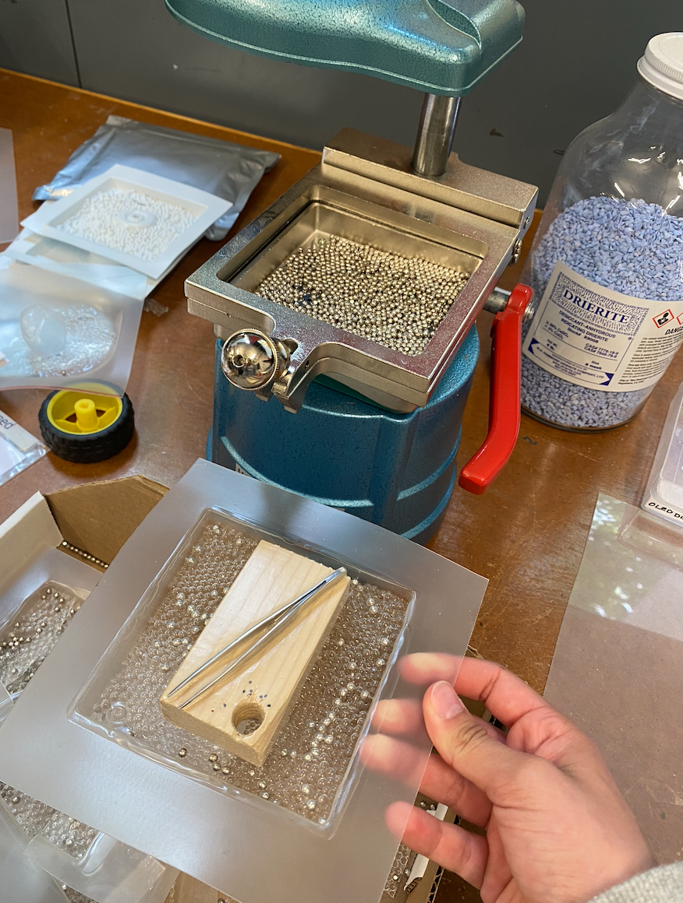
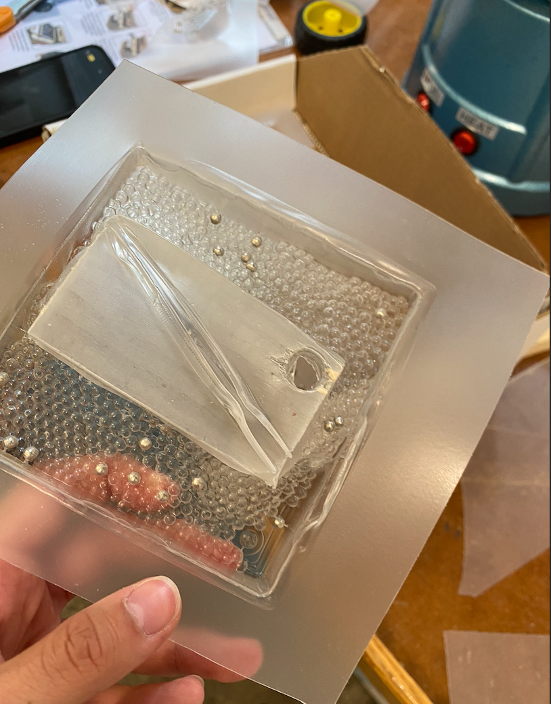

This week, we didn't have an assignment but I did learn some pretty neat things!
I learned how to vacuum seal which is used in lots of things like packaging for razors and other similar plastic sealed products. I decided to do a funky shape of tweezers and a block. It was impossible to get out but I somewhat managed.
For updates on what I did on my project, see the final project tab.